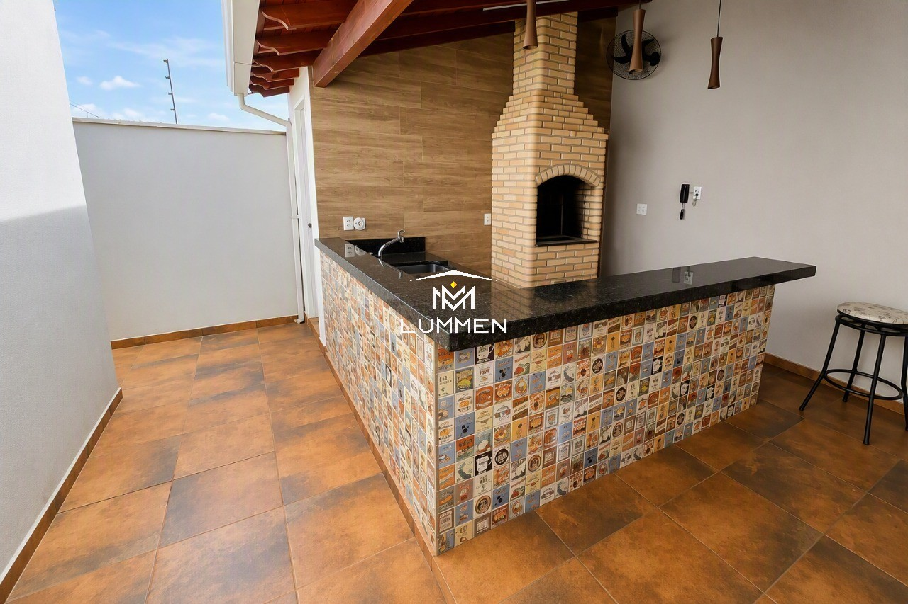

Casa em Condomínio Residencial PalmeirasCasa Ampla com Espaço Gourmet e Lazer
Residência completa com ambientes integrados, quartos confortáveis, varanda gourmet e infraestrutura de segurança em condomínio fechado.
Quartos Amplos
Lazer & Convivência
Vagas de Garagem
Ver fotos e detalhes no WhatsApp →